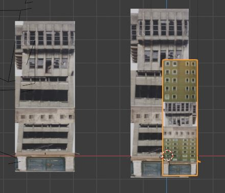
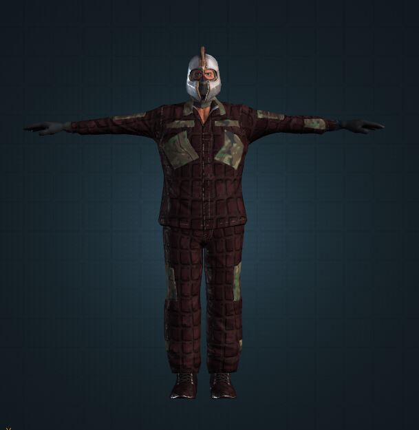
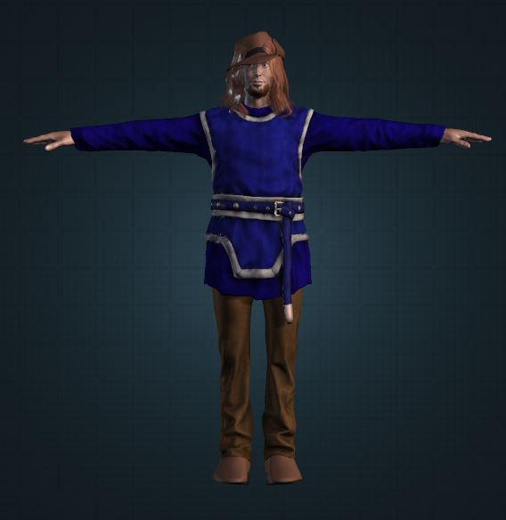

Jesús Esteban Díez
Soy una persona con gran afán de superación, 🥇 🏆 altamente dinámica, con capacidad de adaptación a los cambios, y 🔋 actitud vital positiva. Extrovertido y 💻 📈 con capacidad de trabajo en grupo. Dispuesto a viajar. 🚅
Aficiones: ⚓ ⛵Náutica deportiva (Vela), 🚴 ciclismo, 🏊 natación, música 🎸, turismo, tiro con arco, 🏹 fútbol, ⚽ baloncesto,🏀 mecánica de los coches, 🚗 Videojuegos 🎮 👾
proyectos personales

Desarrollo de protagonista un videojuego inspirado en el universo de DC Comic´s Arrow BLACK RED
Desarrollo de protagonista un videojuego inspirado en el universo de DC Comic´s Arrow BLACK RED

Edificios del mapa videojuego

ARMA PRINCIPAL DEL VIDEOJUEGO

parte 1 la penisula iberca del sigo xv

parte 2 Canada

Enemigo principal
Uno de los personajes historicos que va a tener mucho que ver una historia del videojuego
